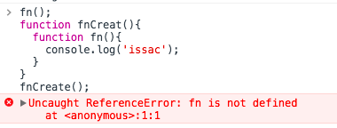
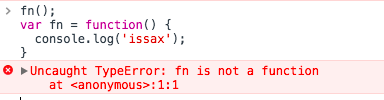

javascript函数提升和变量的声明提前
前言
把他们两个概念放在一起说，并不是因为他们有多大关联，只是因为他们都会被“提前”。
函数提升
函数提升，比较好理解，基本就是js的运行规则了，记住就好。就是无论函数被定义在上下问那个位置，都会在代码执行前优先定义。比如下面的例子：
1 | fn(); |
上面的例子是可以执行的，不会报错，会正常输出“issac”。虽然上面说到上下文的任何位置，但是这个任何位置是指同一个执行环境，怎么才叫同一个执行环境？比如说下面的例子就会报错：
1 | fn(); |
为什么会报错？fn函数执行的执行环境，和fn定义的执行环境已经不同，每个函数都创建一个执行环境，自身的执行环境，外部环境对其是不可见的，全局执行环境对于任何一个函数的函数体内的代码来说都是外部执行环境。
所以上面你在全局执行环境调用，就要在全局执行环境定义。
PS：谈到函数定义想必会想到下面这样的方式定义函数，这样的定义函数个人觉得是很好看的：
1 | fn(); |
这种函数的定义方式叫“函数表达式”，这样定义函数是不会被函数提升，因此上面的代码执行会抛出异常：
变量的声明提前
变量和函数有一点相同：他们都会被提前到当前作用域的顶部；但是变量的提前和函数的提前也是有一点不同：函数是会被提升，并且会定义，而变量的提前是不会被提前定义的，即不会当前作用域提前定义；如果你不清楚作用域的话，对于函数来说，你可以笼统地认为是函数体内部。
1 | function fn(){ |
如上面的例子所见，a变量没有被提前定义。
如果不会被提前定义，那么怎么体现变量的声明提前？
你知道作用域链（感兴趣可以自行Google）吗？不知道？也不要紧，写过js代码的coder，都应该会有这样的经验：函数内部可以访问到外层作用域（比如说最外层的全局作用域）定义的变量和函数，而函数内部的定义的和外层作用域同名的变量会遮盖外层的，就是说如果函数内部有和外层同名的函数会变量，内部的优先级更高，了解到这一点就算不了解作用域链也可以理解变量提升。
1 | var a = 1; |
变量的声明提前就体现在下面这个例子：
1 | var a = 1; |
你认为会输出什么？会输出 1 2 ？然而并不是！
为什么会这样，就是因为变量的声明提前，相信到这里你已经大概知道什么是变量提前，通俗地讲：在当前作用域内，变量会提前声明，遮盖外层作用域的同名变量，因为没有解析作用域链，所以就笼统地说一下，毕竟在深入学习前就得不求甚解嘛。